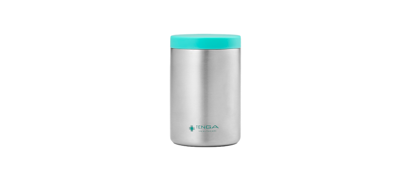
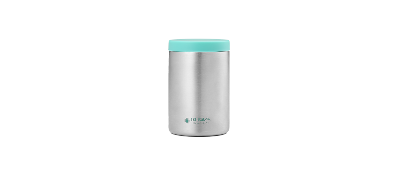

STORY
正しい不妊治療のためには、適切な方法での精子の運搬が不可欠
SEED PODは、「蓋が緩んでこぼれてしまう」「精子が温度変化の影響を受けてしまう」などのトラブルを防ぐために生まれた、精液運搬用保温器です。
精子の運搬には適切な管理が不可欠です。 不妊治療などでは精液を運ぶ必要に迫られる場合がありますが、精子は暑さ・寒さに弱い生き物です。急激な温度変化にさらされると、精子の運動率が落ちたり、死んでしまうこともあります。 SEED PODであれば、採精器単体よりも4倍以上長く適温のキープが可能です。
ABOUT
妊活サポートのひとつとして デザインと機能性にこだわりました
SEED PODは、不妊治療中の患者さんからの「精液の運び方」についてのお悩みの声から生まれた製品です。
3つのこだわりのポイント
- バッグの中にあっても抵抗感が少ない、水筒のようなシンプルなデザイン
- 蓋の裏が温度計になっているので、採精時に室温が適温になっているかのチェックが可能です
- 保温力が高い『SEED POD』と小ぶりで持運びしやすいサイズの『SEED POD mini』の2種類をご用意
SPEC
- 精液の状態を維持する保温容器
- 医療機関で渡される様々な採精容器に幅広く対応し、保温力が高い『SEED POD』と、小ぶりで持運びしやすいサイズの『SEED POD mini』を用意
- 蓋の温度計で簡単に推奨温度の確認が可能
- How To
-
01SEED POD本体のフタを開けておきます02フタの裏にある温度計が推奨温度内になるように室温を調整します
 03容器（専用減菌容器採精用コンテナ）に採精し、フタをしっかり締め、SEED POD本体内に入れます04SEED POD本体のフタをしっかり閉めます
03容器（専用減菌容器採精用コンテナ）に採精し、フタをしっかり締め、SEED POD本体内に入れます04SEED POD本体のフタをしっかり閉めます



SEED POD mini シードポッド ミニ
不妊治療や精液検査のサポートに 精子を適切な温度で守る保温器「SEED POD mini」。 小型なサイズで持ち運びにも便利。
単品価格¥2,200(税込)
妊活について学ぶ
【製品詳細】
- 製品名：SEED POD / SEED POD mini
- 参考価格: 2,640円 / 2,200円(税込)
- 商品サイズ: (幅×奥行×高さ)φ74×124 mm / φ58x 88mm
使用可能な採取容器の最大値：直径63mm、高さ82mm / 直径49mm、高さ58mm - 製造販売元: 株式会社TENGAヘルスケア
- 重量: 40g
- 取扱場所: 公式オンラインストア、ほかWEBストア、一部病院・クリニック等